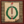

在遊戲中，所有文化被分為許多文化組。每個省份有一個占主導的文化，而每個國家有一個主流文化，並可能有一個或多個可接受文化。
在遊戲中，所有文化被分為許多文化組。每個省份有一個占主導的文化，而每個國家有一個主流文化，並可能有一個或多個可接受文化。
主流文化
- 參見：#文化列表
所有國家都有一個主流文化。主流文化通常是固定的，然而可以通過文化機制或特定事件等改變主流文化。
文化轉變
任何一種可接受文化，當其至少占國家的直轄領核心發展度的50%時，可以被提升為該國家的主流文化。文化轉變消耗 100  外交點數，而原主流文化將相應地變為可接受文化。
外交點數，而原主流文化將相應地變為可接受文化。
當一種文化與原主流文化屬於同一文化組，且由於帝國政府等級獲得的文化聯盟而成為可接受文化時，則玩家不能把主流文化轉變成該文化。
玩家可以通過設定新的主流文化來成立別的國家（並獲得新的國家理念）；或者通過轉入更大的文化組來獲得更多同組文化，以節省可接受文化槽，從而使自己獲益。
相容文化

玩家可以接納一種文化來使其成為相容文化（可接受文化），或選擇將其從已接納文化中移除。
- 玩家可以接納國內任何一種在核心省份達到20總發展度的文化。接納一個文化需要花費 100
 外交點數。
外交點數。 - 將文化從「相容文化」中移除會花費10點外交點數並暫時增加該文化全部省份 +5
 叛亂度。
叛亂度。
接納至少五種不同的文化是專制主義時代的時代任務之一。
最大相容文化數量：
 +2 基礎值
+2 基礎值
 +1 絲綢貿易
+1 絲綢貿易
 +1 外交等級提升至8、14、20、26、31時
+1 外交等級提升至8、14、20、26、31時
| 傳統 | 理念 | 獎勵/野心 | 政策 | |
|---|---|---|---|---|
| +2 | — |
|
— | — |
| +1 |
|
|
|
|
部分國家可通過完成任務獲得國家修正，獎勵相容文化數量上限，且該獎勵修正在該國不再接納某種文化後自動失去；通常，對應的文化將在完成任務時自動被接納。在這種情況下，等同於額外接納對應文化。可獲得此類獎勵的部分遊戲內容如下（分別需要對應DLC）：
- 英格蘭任務可以免槽接納愛爾蘭與蘇格蘭高地文化
- 拜占庭任務可以免槽接納保加利亞文化
- 格魯吉亞和亞美尼亞任務可以免槽接納互相的文化
- 波斯任務可以免槽接納馬什里克、敘利亞與土耳其文化
|
|
只適用於DLC達摩激活時。 |
 莫臥兒的特殊 1 級政府改革莫臥兒底萬擁有特殊的文化接納機制。啟用該政府改革時，將在控制某一文化全部省份後自動接納該文化，且接納之後失去相應省份不會導致取消接納；相應地，轉變主流文化和通常的接納文化機制則不可用。
莫臥兒的特殊 1 級政府改革莫臥兒底萬擁有特殊的文化接納機制。啟用該政府改革時，將在控制某一文化全部省份後自動接納該文化，且接納之後失去相應省份不會導致取消接納；相應地，轉變主流文化和通常的接納文化機制則不可用。
文化聯盟
文化聯盟會自動接受所有其各自文化組內的子文化。一旦提升為  帝國政府等級，或達到1000發展度且玩家未啟用DLC
帝國政府等級，或達到1000發展度且玩家未啟用DLC  常識，任何國家都可以成為其所在文化組的文化聯盟。同一文化組的複數個國家可以同時成為該文組的文化聯盟。一個國家可以通過達到特定發展度（1000）或決議等提高政府等級來成為帝國。
常識，任何國家都可以成為其所在文化組的文化聯盟。同一文化組的複數個國家可以同時成為該文組的文化聯盟。一個國家可以通過達到特定發展度（1000）或決議等提高政府等級來成為帝國。
通過文化聯盟接納的文化不可取消；已經成為文化聯盟的國家，不可將主流文化轉變為同文化組的其它文化。
未接納文化的懲罰
一個擁有不可接納文化的省份會提供更少的稅收，並會有更高的不滿度，以及其它相應的懲罰。一個省份若擁有處於同一文化組，但不被接受的文化時，遭受的懲罰會減少：
同文化組（文化名稱顯示為黃色，在文化標籤里的名字旁會有一個星標）
| −15% | 本地稅收修正 | |
| −15% | 本地人力修正 | |
| −10% | 本地水手修正 |
不相容文化（文化名稱顯示為紅色）
| −33% | 本地稅收修正 | |
| −2% | 本地傳教力量 | |
| −33% | 本地人力修正 | |
| −20% | 本地水手修正 | |
| +2 | 本地叛亂 |
省份修正抵消懲罰
共和國文化容忍
共和國在不同文化組的省份內獲得額外的文化容忍修正。這一修正會與懲罰疊加並減輕懲罰效果，但無法抵消掉懲罰。
| +10% | 本地稅收修正 | |
| +10% | 本地人力修正 | |
| +5% | 本地水手修正 | |
| −0.5 | 本地叛亂 |
部分國家可通過特定遊戲內容，在其擁有的特定文化的省份獲得本地修正，該修正的效果可部分或完全抵消未接納文化的懲罰效果：
- 完成
 剛果任務「非洲霸權」後，可在所有南非文化組、東班圖文化組和大湖地區文化組的省份獲得修正「非洲霸主」，以完全抵消未接納懲罰
剛果任務「非洲霸權」後，可在所有南非文化組、東班圖文化組和大湖地區文化組的省份獲得修正「非洲霸主」，以完全抵消未接納懲罰 - 完成
 瑞典任務「帝國之獅」後，可在所有日耳曼文化組的省份獲得修正「德意志霸主」，以完全抵消未接納懲罰
瑞典任務「帝國之獅」後，可在所有日耳曼文化組的省份獲得修正「德意志霸主」，以完全抵消未接納懲罰
猶太社群信條
 猶太教國家在啟用外交類信條「猶太社群」後，所有擁有的信仰猶太教的同文化組或不相容文化省份將會獲得省份修正
猶太教國家在啟用外交類信條「猶太社群」後，所有擁有的信仰猶太教的同文化組或不相容文化省份將會獲得省份修正
接納對應文化、轉變國家主流文化或轉變省份文化後，不符合條件的省份將會失去該省份修正，而新滿足條件的省份將會獲得該修正。
統一的社群（同文化組）：
| +15% | 本地稅收修正 | |
| +15% | 本地人力修正 | |
| +10% | 本地水手修正 |
統一的社群（異文化）：
| +33% | 本地稅收修正 | |
| +33% | 本地人力修正 | |
| +20% | 本地水手修正 | |
| -2 | 本地叛亂 |
南非霸主
 剛果在完成任務非洲霸權後，所有文化屬於南非、東班圖以及大湖地區文化組的省份將會獲得省份修正
剛果在完成任務非洲霸權後，所有文化屬於南非、東班圖以及大湖地區文化組的省份將會獲得省份修正
接納對應文化、轉變國家主流文化或轉變省份文化後，不符合條件的省份將會失去該省份修正。
| +33% | 本地稅收修正 | |
| +2% | 本地傳教力量 | |
| +33% | 本地人力修正 | |
| +20% | 本地水手修正 | |
| -2 | 本地叛亂 |
轉變文化
當一個國家擁有某個省份的核心，且省份信仰國教、沒有分裂主義時，即可轉變該省份的文化。被轉換文化的省份，其每一點發展度都會消耗10點外交點數[1]，同時轉換時間也隨每一發展度而延長10個月[2]。與核心化花費的機制相似，轉變文化需要的點數和時間以30發展度封頂，發展度超過30的省份，其轉變文化的花費按照30發展度計算。攻城和敵人占領會暫停轉變文化進程，但不會直接終止進程；一旦省份重新被我方控制，轉變就會重啟，然而一旦省份易主，文化轉變立刻被終止。如果文化轉變在10%進度前被終止，所有的外交點數將被歸還。
省份可以被轉變成省份擁有者的主流文化。當激活DLC  哥薩克時，省份也可以被轉變為相鄰省份的文化或是轉變為其原本的文化。如果臨近省份的文化已被接受或即將到達可被接受的閾值，那麼轉化成臨近省份的文化也是有益的。
哥薩克時，省份也可以被轉變為相鄰省份的文化或是轉變為其原本的文化。如果臨近省份的文化已被接受或即將到達可被接受的閾值，那麼轉化成臨近省份的文化也是有益的。
將某省份文化從甲轉變乙會破壞本國與所有主流文化為甲文化國家的關係。
花費
轉變文化花費的修正只會減少轉變省份文化需要的外交點數。轉變文化需要的時間不會減少。
在獲得"轉文化花費"修正後，點數花費會被降到每發展度最少  1點。[3] 下面幾種修正各自的效果如下
1點。[3] 下面幾種修正各自的效果如下
| −25% | 若轉變為相鄰省份的文化（鄰接獎勵）[4] |
| −50% | 若轉變為省份原有的文化（原始文化獎勵）[5] |
| −80% | 若海外殖民省份為本國主流宗教（海外省份獎勵）[6] |
[math]\displaystyle{ \text{花费}=\text{最小}\left(\frac{30}{\text{发展度}}\right)\cdot\text{最大}\left(\frac{1}{10}\cdot\left(1+\sum\text{修正}\right)\right)\cdot\left(1+\text{邻接奖励}\right)\cdot\left(1+\text{原始文化奖励}\right)\cdot\left(1+\text{ 海外省份奖励}\right) }[/math]
| 觸發條件 | |
|---|---|
| −30% | 省份中有 |
| −25% | |
| −20% | 革命國家使用博愛理想政府改革 |
| −15% |
|
| −10% | |
| −5% |
{kind=link}
理念和政策：
| Event modifier | Trigger | Duration | |
|---|---|---|---|
| −5% | 流動的首都 | 埃塞俄比亞事件：「The Itinerant Capital」
|
10年。 |
| −15% | 一個政府，一個種語言 | 西班牙事件：「Grammar of the [Root.Culture.GetName] Tounge」
|
直至統治着死亡 |
| −10% | 驅逐韃靼人 | 俄羅斯任務：「Drive Back the Tatars」 | 15年。 |
文化母國
許多文化都有自己的文化母國。文化母國永遠不會失去它們所屬的文化的省份的核心。[7]通過轉變省份的文化，可以讓原文化母國的核心在50或150年內消失——取決於新的文化是否與原文化屬於同一文化組。下文的清單列出了所有的文化母國。
特殊文化
文化更新和轉移
部分文化可以通過特定的遊戲內容，「更新」為新的文化，「轉移」至另一文化組；例如，遊戲中的女真文化（鄂溫克文化組）可以通過決議「接受滿洲身份認同」，轉換為滿洲文化（中華文化組）。相關遊戲內容系屬趣味內容，用以代表對新民族認同的接納；部分內容需要特定DLC。
由於編碼限制，文化實際上並不能直接從一個文化變動為另一個，更無法移動至另一文化組。因此，此類機制的實現方式，是將遊戲中屬於原文化的所有省份，轉變為一個開局時不存在的新的對應文化，同時將所有原文化國家的主流文化和所有統治者、繼承人和配偶也轉變為新文化。
所有能夠通過特定遊戲內容實現的文化「更新」的詳情列於下表：
| 原文化 | 原文化所屬文化組 | 對應遊戲內容 | 新文化 | 新文化所屬文化組 | 注釋 |
|---|---|---|---|---|---|
| Jurchen 女真 |
鄂溫克 | Manchu 滿洲 |
中華 | ||
| Korean 朝鮮 |
朝鮮 | Sino-Korean 朝鮮[8] |
中華 | 通過該決議需要本國或其非朝貢附屬國擁有（除殖民區域外）所有本文化的省份；需要該國為 當主流文化屬於藏文化組時，需要控制所有本文化組的省份；通過決議後，所有藏文化組文化轉變為藏（中華）。 此外， | |
| Vietnamese 越南 |
孟-高棉 | Sino-Vietnamese 越 | |||
| Zhuang 壯 |
泰 | Sino-Zhuang 壯[9] | |||
| 藏文化組所有文化： Tibentan 吐蕃 Yi 彝 Bai 白 Miao 苗 |
藏 | Sino-Tibetan 藏 | |||
| Mongol 蒙古 Oirat 瓦剌 Khalkha 喀爾喀 Korchin 科爾沁 |
阿爾泰 | Sino-Altaic 蒙 |
中華 | 阿爾泰文化組的其餘文化不發生變化 | |
| 該國同文化組所有文化 | - | Roman 羅馬 |
失落文化 | 僅改變本國的主流文化和所有已擁有的省份至羅馬（失落文化） | |
| English 英格蘭 Scotish 蘇格蘭 Welsh 威爾士 Cornish 康沃爾 |
不列顛 | Anglois 盎格盧瓦 |
法蘭西 | 不列顛文化組的其餘文化不發生變化 | |
| 東斯拉夫文化組所有文化 西斯拉夫文化組所有文化 南斯拉夫文化組所有文化
|
東斯拉夫/西斯拉夫/南斯拉夫 | （對應同名文化） | 斯拉夫 | 前述三個文化組中的所有文化（除阿爾巴尼亞文化外）均分別轉變為斯拉夫文化組的對應同名文化 | |
| Georgian 格魯吉亞 |
高加索 | Greco-Georgian 希臘-格魯吉亞 |
拜占庭 | 該事件僅在完成 | |
| Azerbaijan 阿塞拜疆 |
伊朗 | Turko-Iranian 突厥-伊朗 |
伊朗 | 該事件僅在完成 | |
| Turkish 土耳其 |
黎凡特 | ||||
| Turkmeni 土庫曼 |
阿爾泰 | ||||
| Norwegian 挪威 Danish 丹麥 Swedish 瑞典 Icelandic 冰島 |
北歐 | Norse 諾斯 |
北歐 | 北歐文化組的其餘文化不發生變化 |
需要注意下列幾點：
- 轉進要麼會帶動全圖相應文化一起轉進，要麼要求控制所有文化或文化組省份，個別例子會只轉化擁有的文化省份。
- 大部分對文化有要求的偉大工程，一般都考慮到了文化轉進，因此之後可用；對於轉進羅馬文化，只有歐洲各文化組及黎凡特文化組適配；反過來講，一旦以羅馬文化為主流文化，則在轉文化後可以使用所有對屬於上述所有文化組的文化有要求的偉大工程。
- 轉變文化會導致部分修正失效。例如
 格魯吉亞任務樹使在接納亞美尼亞文化期間獲得某一修正，但轉進拜占庭文化組後即使沒有失去這一接納，仍會導致失去該修正。
格魯吉亞任務樹使在接納亞美尼亞文化期間獲得某一修正，但轉進拜占庭文化組後即使沒有失去這一接納，仍會導致失去該修正。
失落文化
一些已經消亡的族群和文化，或幻想中的文化在遊戲中屬於失落文化文化組。所有失落文化在遊戲開始時均不存在，但仍可以藉助自定義國家等方式來讓其存在於遊戲中。在不使用自定義國家、不開啟隨機新大陸、不使用控制台的正常遊戲中可被復活的文化包括：
- 羅馬文化。通過
 重建羅馬帝國決議，會將本國主流文化轉變為羅馬文化；該國家主流文化所在文化組的全部省份都將變為羅馬文化。
重建羅馬帝國決議，會將本國主流文化轉變為羅馬文化；該國家主流文化所在文化組的全部省份都將變為羅馬文化。
另外，使用控制台指令使  揚馬延入侵也會使失落文化文化組的揚馬延文化出現於遊戲中。
揚馬延入侵也會使失落文化文化組的揚馬延文化出現於遊戲中。
文化組
遊戲中文化、文化組的劃分主要參考了真實世界中的語言分類、地緣、文化現象等因素，並基於遊戲性做出了調整。因此，語言學上的語族、語種分類是遊戲中劃分不同文化的主要參考依據之一，但並非唯一依據；典型的例子有「喀爾巴阡文化組」「黎凡特文化組」等。
擁有玩家國家所在文化組的全部省份是宗教改革時代的時代任務之一。對省份的所有權不包括殖民領；如果玩家想要同時完成擁有五個殖民領的時代任務的話，就需要在組建殖民領之前轉變殖民地省份的文化。
文化列表
下表列出遊戲中存在的所有文化及其所屬文化組；文化右側列出的國家是該文化的文化母國。
部分文化在遊戲中並不存在，只可能通過自定義國家在遊戲中出現。另有部分文化在開局時不存在，但可通過特定機制在遊戲進程中出現。
由於文化、文化組數目眾多，為方便查閱，現大致依照其所屬地理分區分組列出。
歐洲
非洲
亞洲
朝鮮
- 朝鮮
 朝鮮
朝鮮
烏戈爾
美洲
大洋洲
其它
失落文化
- 亞特蘭蒂斯
- 斯巴達
- 雅典
- 古埃及
- 羅馬
- 揚馬延
- 普魯西尼亞
- 腓尼基
- 斯科訥
- 盎格魯-撒克遜
- 巴比倫
- 伊特魯里亞
- 帕提亞
- 阿拉姆
- 希伯來
- 斯基泰
- 利沃尼亞
參考資料
- ↑ From /Europa Universalis IV/common/defines.lua: PS_CHANGE_CULTURE = 10
- ↑ From /Europa Universalis IV/common/defines.lua: MONTHS_TO_CHANGE_CULTURE = 10, -- How many months it will take to change culture in a province, per development.
- ↑ Verify as Russia, "War of the Quadruple Alliance" bookmark: Full Religious, Enlightenment, Influence-Religious: Cultural Unity, Parliament issue "Assimilation and Settlement Policy".
- ↑ From /Europa Universalis IV/common/defines.lua: CULTURE_COST_DIFF_ADJACENT = -25, -- Difference in cost in percent to convert to adjacent culture.
- ↑ From /Europa Universalis IV/common/defines.lua: CULTURE_COST_DIFF_ORIGINAL = -50, -- Difference in cost in percent to convert to original culture.
- ↑ From /Europa Universalis IV/common/defines.lua: PS_CHANGE_CULTURE_OVERSEAS_RELIGION_MOD = -0.8, -- Modifier how much cheaper it is to change culture in overseas province if same religion
- ↑ 定義如下：/Europa Universalis IV/common/defines.lua: CORE_LOSE_PRIMARY_CULTURE_TAG = -1, -- how many years until a core is lost for the primary tag of a country (-1 = never lost)
- ↑ 截至目前版本，漢化包將漢化前後的「Korean」（id=
korean）和「Sino-Korean」（id=korean_new）的名稱均翻譯為「朝鮮」。 - ↑ 截至目前版本，漢化包將漢化前後的「Zhuang」（id=
zhuang）和「Sino-Zhuang」（id=zhuang_new）的名稱均翻譯為「壯」。 - ↑ 10.0 10.1 該文化在當前版本遊戲中不存在，只能通過自定義國家出現。
- ↑ 該文化組僅在俄羅斯完成特定任務後出現。東斯拉夫、西斯拉夫、南斯拉夫（阿爾巴尼亞文化除外）文化組中原有的所有文化將一一轉變為新增的斯拉夫文化組中的同名文化。